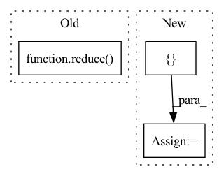

Pattern ID :25929
Before Change
:return: the given file(s) as a single string.
:rtype: str
return reduce( [self.open(f).read() for f in self.__fileids(fileids)], [])
def words(self, fileids=None):
:param fileids: A list specifying the fileids that should be used.After Change
:return: the given file(s) as a single string.
:rtype: str
contents = []
for i in self.__fileids(fileids):
with self.open(i) as fp:
contents.append(fp.read())
return reduce(contents, [])In pattern: SUPERPATTERN
Frequency: 3
Non-data size: 3
Instances Fragment ID: 78333679
Project Name: nltk/nltk
Commit Name: b6c06b23ffd579859a7bf7acc88b11cc7bddb8cf
Time: 2021-04-15
Author: rmalouf@sdsu.edu
File Name: nltk/corpus/reader/mte.py
M Class Name: MTECorpusReader
N Class Name: MTECorpusReader
M Method Name: raw(2)
N Method Name: raw(2)
M Parent Class: TaggedCorpusReader
N Parent Class: TaggedCorpusReader
M File Name: nltk/corpus/reader/mte.py
N File Name: nltk/corpus/reader/mte.py
M Start Line: 257
M End Line: 257
N Start Line: 258
N End Line: 262
Before Change
model1_logp = model1.logp({"fsum": self.y})
with pm.Model() as model2:
gptot = pm.gp.Latent(reduce(add, self.means), reduce( add, self.covs) )
fsum = gptot.prior("fsum", self.X, reparameterize=False)
model2_logp = model2.logp({"fsum": self.y})
npt.assert_allclose(model1_logp, model2_logp, atol=0, rtol=1e-2)After Change
fp2 = gptot.conditional("fp2", self.Xnew)
fp = np.random.randn(self.Xnew.shape[0])
logp1 = model1.logp({ "fsum": self.y, "fp1": fp} )
logp2 = model2.logp({"fsum": self.y, "fp2": fp})
npt.assert_allclose(logp1, logp2, atol=0, rtol=1e-2)
Fragment ID: 78333678
Project Name: pymc-devs/pymc3
Commit Name: 64c1464ea5cffa47cb0199cda82ff85cd84a4d9c
Time: 2021-11-21
Author: w.j.engels@gmail.com
File Name: pymc/tests/test_gp.py
M Class Name: TestGPAdditive
N Class Name: TestGPAdditive
M Method Name: testAdditiveLatent(1)
N Method Name: testAdditiveLatent(1)
M Parent Class:
N Parent Class:
M File Name: pymc/tests/test_gp.py
N File Name: pymc/tests/test_gp.py
M Start Line: 957
M End Line: 982
N Start Line: 991
N End Line: 1014
Before Change
with pm.Model() as model2:
gptot = pm.gp.MarginalSparse(
reduce(add, self.means), reduce( add, self.covs) , approx=approx
)
fsum = gptot.marginal_likelihood("f", self.X, Xu, self.y, noise=sigma)
model2_logp = model2.logp({"fsum": self.y})After Change
fp = np.random.randn(self.Xnew.shape[0])
model1_logp = model1.logp({ "fp1": fp, "fsum": self.y} )
model2_logp = model2.logp({"fp2": fp, "fsum": self.y})
npt.assert_allclose(model1_logp, model2_logp, atol=0, rtol=1e-2) Fragment ID: 78333681
Project Name: pymc-devs/pymc3
Commit Name: 64c1464ea5cffa47cb0199cda82ff85cd84a4d9c
Time: 2021-11-21
Author: w.j.engels@gmail.com
File Name: pymc/tests/test_gp.py
M Class Name: TestGPAdditive
N Class Name: TestGPAdditive
M Method Name: testAdditiveMarginalSparse(2)
N Method Name: testAdditiveMarginalSparse(2)
M Parent Class:
N Parent Class:
M File Name: pymc/tests/test_gp.py
N File Name: pymc/tests/test_gp.py
M Start Line: 924
M End Line: 951
N Start Line: 951
N End Line: 988